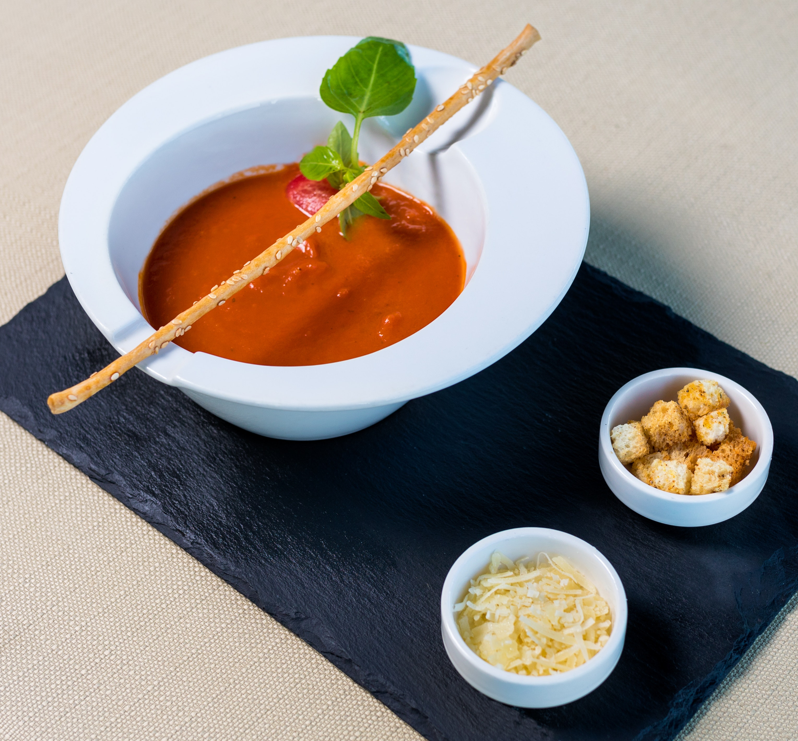

Gazpazcho Recipe

Wonderful cold soup full of fresh Mediterranean vegetables! Quick and easy.
Ingredients
- 4 cups tomato juice
- 1 onion, minced
- 1 green bell pepper, minced
- 1 cucumber, chopped
- 2 cups chopped tomatoes
- 2 green onions, chopped
- 1 clove garlic, minced
- 3 tablespoons fresh lemon juice
- 2 tablespoons red wine vinegar
- 1 teaspoons dried tarragon
- 1 teaspoons dried basil
- ¼ cup chopped fresh parsley
- 1 teaspoons white sugar
- salt and pepper to taste
Steps (just one)
- In a blender or food processor, combine tomato juice, onion, bell pepper, cucumber, tomatoes, green
onions, garlic, lemon juice, red wine vinegar, tarragon, basil, parsley, sugar, salt, and pepper. Blend
until well-combined but still slightly chunky. Chill at least 2 hours before serving.
Back to Homepage